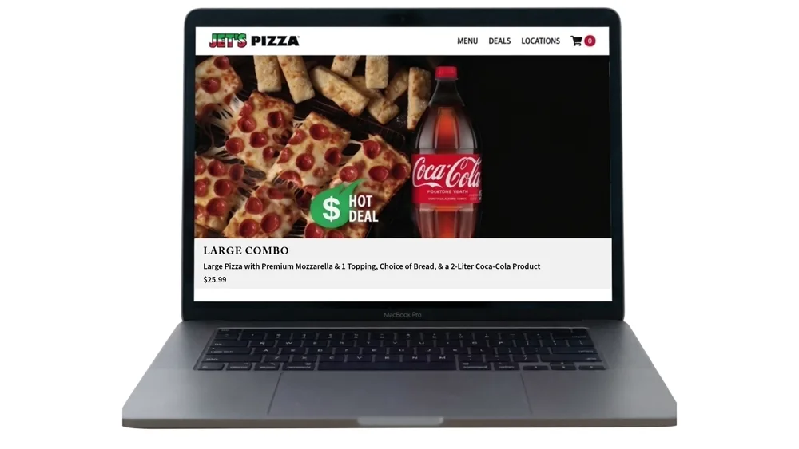
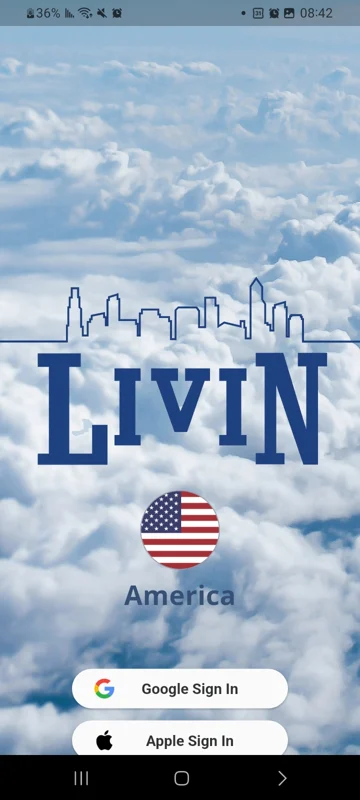

UX Audit & Usability Research
Usability audits, behavioral mapping, metrics analysis, and guest checkout testing.
Srulik Shriki · Design portfolio
With a background in graphic communication, I design digital experiences that make complex steps easier to navigate.



About
I combine visual design with usability research to understand where people get stuck and make the next step clearer.
Usability audits, behavioral mapping, metrics analysis, and guest checkout testing.
User personas, pain point synthesis, and maps of key steps and decisions.
Benchmarking against comparable products to identify where pricing and interfaces could be clearer.
Transparent pricing, order tracking, persistent pickup details, and clear email receipts.